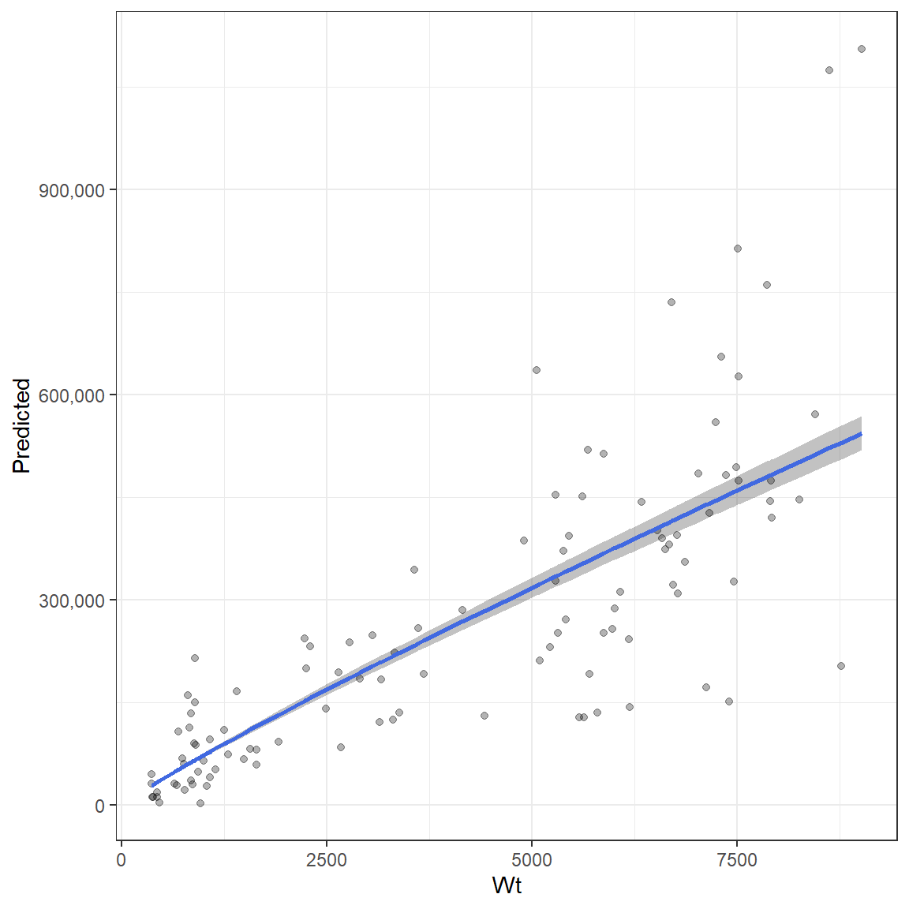

Load the DEPM and tidyverse libraries.
The traditional Daily Egg Production Method (DEPM) has been used to determine spawning stock biomass of fish populations for over 40 years. While this package is primarily designed to facilitate the use of revised approaches to DEPM, including (stage-based estimation of daily egg production (McGarvey et al. 2018) and female adult size-dependence of population numbers and batch fecundity (DEPMWt; McGarvey et al in review), many aspects of the approach (i.e. estimation of some key DEPM parameters) remain the same. Therefore, the traditional DEPM methods are also included in this package. Here, an example of the DEPM approach is given using South Australian snapper (Pagrus auratus).
Five datasets are required to use the DEPM approach:
Spawning Area (A) is not calculated as part of this package but its estimates will be included as one of the final steps.
Daily egg production is estimated using a stage-based estimator (McGarvey et al. 2018) via the function Estimate_P0() which requires a dataset that has been formatted as such:
# egg density structure
str(egg_data)
#> 'data.frame': 2961 obs. of 6 variables:
#> $ Region : Factor w/ 4 levels "NGSV","NSG","SGSV",..: 1 1 1 1 1 1 1 1 1 1 ...
#> $ Site : Factor w/ 329 levels "GV18_005","GV18_006",..: 1 2 3 4 5 6 7 8 9 10 ...
#> $ Stage_num: num 1 1 1 1 1 1 1 1 1 1 ...
#> $ Density : num 0 0 0 0 0 0 0 0 0 0 ...
#> $ Age : num 0.178 0.173 0.17 0.173 0.188 ...
#> $ Hatch : num 1.3 1.26 1.24 1.26 1.36 ...
# egg density head()
head(egg_data)
#> Region Site Stage_num Density Age Hatch
#> 1 NGSV GV18_005 1 0 0.1782736 1.295414
#> 2 NGSV GV18_006 1 0 0.1730048 1.257129
#> 3 NGSV GV18_007 1 0 0.1701226 1.236185
#> 4 NGSV GV18_008 1 0 0.1727973 1.255621
#> 5 NGSV GV18_013 1 0 0.1877140 1.364012
#> 6 NGSV GV18_014 1 0 0.1839234 1.336468This dataset is in a long format where every row is a density estimate of the eggs in each stage of each sample. This dataset contains several columns that must include:
site =
Density variableHatch column based on similar names in a similar manner to the Density variableAdditional columns can be included in the dataset, so the user does not need to remove variables that could be useful to them later on. For example, in the egg_data dataset, the Stage_num variable represents the development stage of each density estimate in each sample. However as each row of this dataset is a different observation, this variable is not needed by the function.
The function also has the ability to break the data down spatially and temporally. If the Region and Time arguments are not used then \(P_{0}\) will be estimated using all of the data. If you provide either Region or Time then a \(P_{0}\) will be returned for each Region/Time combination. Therefore, a time series of data can analysed in a single function call. Here is an example using 4 DEPM surveys conducted in different areas but in the same year. The results are returned as a dataframe where each row is a survey and the estimate, standard error and specified mortality are returned.
# run P0 function
P0_results <- Estimate_P0(data = egg_data,
site = "Site",
Region = "Region",
Z = .4)
P0_results
#> # A tibble: 4 x 4
#> Region P0 P0_se Z
#> <fct> <dbl> <dbl> <dbl>
#> 1 NGSV 2.03 0.391 0.4
#> 2 NSG 0.947 0.218 0.4
#> 3 SGSV 0.527 0.129 0.4
#> 4 SSG 0.725 0.0849 0.4Spawning fraction is estimated using the function Estimate_Spawning_fraction() which requires a dataset that has been formatted as two columns: 1) the number of females in spawning condition and 2)the total number of females. Each row represents a sample and the spawning fraction is estimated using a ratio estimator.
The correct columns in the dataset will be detected by the function. The column with the total number of females should be called “Total”, “Tot” or something similar. The column with the number of spawning females can include the term “spawn” or “yes” depending on how your dataset is setup. Ours is named “yes” as we had a “yes” or “no” designation for spawning fish.
str(S_data)
#> 'data.frame': 20 obs. of 3 variables:
#> $ yes : int 1 16 9 5 3 2 1 2 4 5 ...
#> $ no : int 6 2 1 4 2 1 2 4 2 1 ...
#> $ Total: int 7 18 10 9 5 3 3 6 6 6 ...
head(S_data)
#> yes no Total
#> 1 1 6 7
#> 2 16 2 18
#> 3 9 1 10
#> 4 5 4 9
#> 5 3 2 5
#> 6 2 1 3Similar to other functions, specifying the Region or Time argument with relevant column names will group the estimates according to specific surveys. However, here an example is given without a region or time grouping. The results are returned as a dataframe with the estimate, its variance, the standard error and its CV. Each row represents a survey.
Spawn_results <- Estimate_Spawning_fraction(S_data)
Spawn_results
#> Ratio estimate Variance SE CV
#> 1 0.722488 0.002977749 0.05456875 0.07552894Sex ratio is estimated using the function Estimate_sex_ratio() which requires a dataset that has been formatted to include the weight of males and females along with Region/Time variables. Each row represents a sample and the sex ratio is estimated using a ratio estimator in the same manner as spawning fraction. The same Region/Time break down can be applied and Region is available in this dataset. The results returned are the same format as Estimate_Spawning_fraction().
head(R_data)
#> Sample.code Year Region F M Total
#> 1 ST12/1801B18-Dec-18 2018 NGSV 2.45000 6.42500 8.87500
#> 2 ZA12/1801B19-Dec-18 2018 NGSV 11.54800 10.83200 22.38000
#> 3 DC12/1801B11-Dec-18 2018 NSG 8.95600 16.22400 25.18000
#> 4 SA12/1801B12-Dec-18 2018 NSG 2.94000 7.18500 10.12500
#> 5 GLLOYD16-Dec-18 2018 SGSV 43.33143 51.11838 94.44980
#> 6 GLLOYD17-Dec-18 2018 SGSV 20.28760 16.20903 36.49663
sex_ratio_results <- Estimate_sex_ratio(R_data, Region = "Region")
sex_ratio_results
#> Region Ratio estimate Variance SE CV
#> 1 NGSV 0.4478643 0.0095201654 0.09757133 0.21785913
#> 2 NSG 0.3369494 0.0007137716 0.02671650 0.07928936
#> 3 SGSV 0.3939694 0.0011661437 0.03414885 0.08667892
#> 4 SSG 0.5741385 0.0018484630 0.04299376 0.07488394The key difference between teh DEPMWt approach and the traditional DEPM is how female weight and fecundity are handled. In the DEPMWt approach, female weight is broken into discrete weight bins and their variance is described using a multinomial distribution. However, in the traditional DEPM approach, the W parameter is used and represents the mean female weight and its variance. Similarly, fecundity is also expressed as the mean number of eggs per adult female and its variance.
Fecundity
Fecundity needs to be summarised in a couple of ways. Firstly, a batch-fecundity relationship is required for gonad free weight which can be used to predict the fecundity of fish whose histology has not been examined. This relationship can be estimated using the Estimate_Batch_Fecundity() function. This function is quite useful as it can return three sets of outputs:
return.parameters = TRUE.The batch fecundity estimator uses an allometric relationship which allows for wider variance with larger weights. Therefore, there are four parameters returned, alpha, beta and two sigma parameters that determine how variance changes with weight. A dataframe with two columns must be provided that includes gonad free weight in grams and the number of eggs for that fish. The function will determine which is which based on their scales (number of eggs > Wt in grams). A set of starting parameters are required and are provided to the start_pars argument as a list. The estimated parameters are printed to the screen if verbose = TRUE.
head(fecundity_data_GonardFrWT)
#> Gonad_fr_wt batch_fecund
#> 1 5450 394035.7
#> 2 6780 309483.9
#> 3 7490 494000.0
#> 4 5385 371710.5
#> 5 7525 626406.2
#> 6 8450 570789.5
# List of starting parameters for the batch fecundity estimator
parameters <- list( alpha= 110, beta = 0.85 , Sigma0 = 10.5, Sigma1 = 0.7)
# Return parameters
Batch_fec_pars <- Estimate_Batch_Fecundity(fecundity_data_GonardFrWT, start_pars = parameters, return.parameters = TRUE)
# Return batch fecundity estimates
Batch_fecundity_relationship <- Estimate_Batch_Fecundity(fecundity_data_GonardFrWT, start_pars = parameters, verbose = FALSE)
#plot of relationship
ggplot(Batch_fecundity_relationship, aes(Wt, y = Predicted, ymin = low, ymax = upp))+
geom_ribbon( alpha = .3)+
scale_y_continuous(labels = scales::comma)+
geom_point(aes(y = Fecundity), alpha = .3)+
geom_line(aes(y = Predicted), col = "royalblue", size = 1) +
theme_bw()
Weight The parameters for W and F are determined using a single function called Estimate_mean_W_F(). This function requires:
weight.data which will be used to estimate W and estimate F based on the fecundity-at-weight relationship.TotalWt indicating the variable name for Total weight in grams. This will be used to estimate W.GonadFrWt indicating the variable name for gonad free weight in grams. This will be used to estimate F for each weight. If gonad free weight is not available, then this argument can be left NULL which will prompt the function to estimate fecundity based on total weight instead. NOTE: If total weight is used to determine F then total weight should be used in return batch fecundity parameters from Estimate_Batch_Fecundity() as well
Estimate_Batch_Fecundity() with return.parameters = TRUE. The object returned from this call can be directly provided to Estimate_mean_W_F().As with other functions, providng Time/Region variable names will group the results either spationally, temporally or both. Here a Region grouping is applied.
# data structure
head(Wt_data)
#> Year Region CFL Tot_WT..kgs. Tot_Wt..g. Sex Gonad.maturity Gonad.Wt Tot.Wt
#> 1 2018 NGSV 432 1.544 1544 F 3 70 1544
#> 2 2018 NGSV 485 2.374 2374 F 3 136 2374
#> 3 2018 NGSV 433 1.522 1522 F 3 42 1522
#> 4 2018 NGSV 435 1.592 1592 F 3 32 1592
#> 5 2018 NGSV 384 1.152 1152 F 3 18 1152
#> 6 2018 NGSV 411 1.410 1410 F 3 32 1410
#> Gonad_free_Wt
#> 1 1474
#> 2 2238
#> 3 1480
#> 4 1560
#> 5 1134
#> 6 1378
# Estimate mean W and mean F using total weight and gonad free weight, respectively.
F_W_results <- Estimate_mean_W_F(weight.data = Wt_data,
TotalWt = "Tot.Wt",
GonadFrWt = "Gonad_free_Wt",
Region = "Region",
parameters = Batch_fec_pars)
F_W_results
#> Region Mean_W var_W Mean_F var_F
#> 1 NGSV 1166.5000 31129.417 80851.28 232341876
#> 2 SSG 507.5385 2063.444 38843.33 68653911
#> 3 NSG 849.7143 8405.862 62139.22 130450028
#> 4 SGSV 2440.0174 9619.222 157896.28 60117239Spawning area is the only DEPM parameter that is not estimated in this package as this is typically done using GIS methods. However, the Spawning area object can be created manually by taking another parameter object (P0, S or R are good choices) and using its Time/Region groupings to create new object. As this example has one survey from 4 regions in a single year, only the Region variable needs to be carried across. A new variable can then be added with the location in the correct order in that column. Spawning Area is a precise quantity and therefore does not require a variance. Note that spawning area must be in metres squared.
# Get Time/region combos from the P0 object
Area <- select(P0_results, Region)
Area$A <- c(2822201039, #NGSV
1884895030, # NSG
2285649237, # SGSV
3239913469) # SSG
head(Area)
#> # A tibble: 4 x 2
#> Region A
#> <fct> <dbl>
#> 1 NGSV 2822201039
#> 2 NSG 1884895030
#> 3 SGSV 2285649237
#> 4 SSG 3239913469With all of the parameters now available to calculate spawning stock biomass, these now need to be combined into a dataset that can be input into the Estimate_DEPM_Biomass() function. For the DEPM approach, two objects are needed:
A dataframe of all of the parameter estimates can be assembled using combine_estimates() where each of the parameter objects are provided as arguments.
Adults_pars <- combine_estimates(P0 = P0_results, R = sex_ratio_results, S = Spawn_results, A = Area, W_F = F_W_results)
#> Joining, by = "Region"
#> Joining, by = "Region"
#> Joining, by = "Region"
Adults_pars
#> # A tibble: 4 x 8
#> Region P0 Z R A S W .F
#> <fct> <dbl> <dbl> <dbl> <dbl> <dbl> <dbl> <dbl>
#> 1 NGSV 2.03 0.4 0.448 2822201039 0.722 1166. 80851.
#> 2 NSG 0.947 0.4 0.337 1884895030 0.722 850. 62139.
#> 3 SGSV 0.527 0.4 0.394 2285649237 0.722 2440. 157896.
#> 4 SSG 0.725 0.4 0.574 3239913469 0.722 508. 38843.Where a parameter is estimated as time invariant, it will be automatically allocated to all of the Region or Time groupings applied for the other parameters. Here this occurs for S. However, if a particular parameter is missing in one instance but is not time invariant, it will not be carried over and NA will be returned. In this situation, it will need to be inserted manually. For example, lets pretend that R is missing for “SSG”:
Adults_pars[Adults_pars$Region == "SSG", "R"] <- 0.5741385Variance estimates are needed by Estimate_DEPM_Biomass() in order to determine the precision of the biomass estimates. These are provided in the same fashion as the parameter estimates using combine_variances().
Adults_vars <- combine_variances(P0_results, R = sex_ratio_results, S = Spawn_results, W_F = F_W_results)
#> Joining, by = "Region"
#> Joining, by = "Region"
Adults_vars
#> # A tibble: 4 x 7
#> Region P0 Z R S W .F
#> <fct> <dbl> <dbl> <dbl> <dbl> <dbl> <dbl>
#> 1 NGSV 0.391 0.4 0.00952 0.00298 31129. 232341876.
#> 2 NSG 0.218 0.4 0.000714 0.00298 8406. 130450028.
#> 3 SGSV 0.129 0.4 0.00117 0.00298 9619. 60117239.
#> 4 SSG 0.0849 0.4 0.00185 0.00298 2063. 68653911.The same manual insertions can be performed on this object:
Adults_vars[Adults_vars$Region == "SSG", "R"] <- 0.0018484630All of the hard work is done once all of the parameters and their variances have been estimated and organised. The final step is to combine them using Estimate_DEPM_Biomass(). This function requires each of these objects and will return a list of results which include the spawning stock biomass and total number of females.
# Estimate Biomass
Snapper_biomass_results <- Estimate_DEPM_Biomass(adult.pars = Adults_pars,
adult.vars = Adults_vars)
# a list of two outputs is returned
Snapper_biomass_results$Biomass # biomass in kgs
#> Region Z Biomass SD
#> 1 NGSV 0.4 255866.06 116146.57
#> 2 NSG 0.4 100289.13 54941.29
#> 3 SGSV 0.4 65373.58 45453.12
#> 4 SSG 0.4 74034.45 35203.11
Snapper_biomass_results$Nfem # number of females
#> Region Z Nfem SD
#> 1 NGSV 0.4 98236.85 36190.284
#> 2 NSG 0.4 39769.09 21125.869
#> 3 SGSV 0.4 10555.33 7269.314
#> 4 SSG 0.4 83749.38 38604.627The list of dataframes returned from the function can then be saved and used for plotting
# Create new objects
Snapper_biomass <- Snapper_biomass_results$Biomass
Snapper_Nfem <- Snapper_biomass_results$NfemPlot biomass with SD
ggplot(Snapper_biomass, aes(Region,Biomass,
ymin = Biomass - SD,
ymax = Biomass + SD))+
geom_crossbar(fill = "royalblue", alpha = .8)+
expand_limits(y = 0)+
scale_y_continuous(name = "Biomass (kg)", labels = scales::comma, breaks = scales::pretty_breaks(5))+
theme_bw()Plot total number of females
ggplot(Snapper_Nfem, aes(Region,Nfem,
ymin = Nfem - SD,
ymax = Nfem + SD))+
geom_crossbar(fill = "purple", alpha = .8)+
expand_limits(y = 0)+
scale_y_continuous(name = "Number of females", labels = scales::comma, breaks = scales::pretty_breaks(5))+
theme_bw()As the \(P_{0}\) estimation methods in this package require a specified level of egg mortality (Z), it is sensible to test the sensitivities of the \(P_{0}\) estimates, as well as the DEPMWt results to different Z values. Testing different values of Z can be done by passing a vector of values to the z argument of Estimate_P0():
Multi_Z_P0_results <- Estimate_P0(data = egg_data,
site = "Site",
Region = "Region",
Z = c(.2, .4, .6))This will return a different \(P_{0}\) estimate for each value of Z for each Time/Region grouping:
Multi_Z_P0_results
#> Region P0 P0_se Z
#> 1 NGSV 1.7972317 0.35215150 0.2
#> 2 NSG 0.8400430 0.19454626 0.2
#> 3 SGSV 0.4600852 0.11248190 0.2
#> 4 SSG 0.6294788 0.07419926 0.2
#> 5 NGSV 2.0333120 0.39057148 0.4
#> 6 NSG 0.9472290 0.21775974 0.4
#> 7 SGSV 0.5268231 0.12938292 0.4
#> 8 SSG 0.7254297 0.08486910 0.4
#> 9 NGSV 2.3084189 0.43464390 0.6
#> 10 NSG 1.0709549 0.24423117 0.6
#> 11 SGSV 0.6061931 0.15043110 0.6
#> 12 SSG 0.8390163 0.09755602 0.6For South Australian Snapper, the resulting \(P_{0}\) estimates are very similar.
Multi_Z_P0_results$Z <- as.factor(Multi_Z_P0_results$Z) # convert Z to a factor for easy plotting
ggplot(Multi_Z_P0_results, aes(Z, P0, ymin = P0 - P0_se, ymax = P0 + P0_se, fill = Z))+
geom_crossbar()+
facet_wrap(~Region, ncol = 2, scales = "free")+
scale_fill_viridis_d()+
theme_bw()An object from Estimate_P0() with multiple Zs can be included in the biomass estimation procedure in the same manner as before. When multiple Zs are provided to combine_estimates() and combine_variances() they are treated as groupings and all other parameters will be aligned with them. When creating an object for spawning area A, care must be taken to only have unique Time/Region groupings. Using an object from Estimate_P0() with multiple Zs can erroneously add duplicates if you’re not careful. This will cause error messages.
# Make sure that Area has unique Time/Region breakdowns (Only Region used in this example)
Area <- data.frame(Region = unique(Multi_Z_P0_results$Region))
Area$A <- c(2822201039, #NGSV
1884895030, # NSG
2285649237, # SGSV
3239913469) # SSG
Multi_Z_adult_pars <- combine_estimates(P0 = Multi_Z_P0_results, R = sex_ratio_results, S = Spawn_results, A = Area, W_F = F_W_results)
#> Joining, by = "Region"
#> Joining, by = "Region"
#> Joining, by = "Region"
Multi_Z_adult_vars <- combine_variances(P0 = Multi_Z_P0_results, R = sex_ratio_results, S = Spawn_results, W_F = F_W_results)
#> Joining, by = "Region"
#> Joining, by = "Region"A new object with Z as a grouping will now be produced which can be passed to the biomass estimation function.
Multi_Z_adult_pars
#> Region P0 Z R A S W .F
#> 1 NGSV 1.7972317 0.2 0.4478643 2822201039 0.722488 1166.5000 80851.28
#> 2 NSG 0.8400430 0.2 0.3369494 1884895030 0.722488 849.7143 62139.22
#> 3 SGSV 0.4600852 0.2 0.3939694 2285649237 0.722488 2440.0174 157896.28
#> 4 SSG 0.6294788 0.2 0.5741385 3239913469 0.722488 507.5385 38843.33
#> 5 NGSV 2.0333120 0.4 0.4478643 2822201039 0.722488 1166.5000 80851.28
#> 6 NSG 0.9472290 0.4 0.3369494 1884895030 0.722488 849.7143 62139.22
#> 7 SGSV 0.5268231 0.4 0.3939694 2285649237 0.722488 2440.0174 157896.28
#> 8 SSG 0.7254297 0.4 0.5741385 3239913469 0.722488 507.5385 38843.33
#> 9 NGSV 2.3084189 0.6 0.4478643 2822201039 0.722488 1166.5000 80851.28
#> 10 NSG 1.0709549 0.6 0.3369494 1884895030 0.722488 849.7143 62139.22
#> 11 SGSV 0.6061931 0.6 0.3939694 2285649237 0.722488 2440.0174 157896.28
#> 12 SSG 0.8390163 0.6 0.5741385 3239913469 0.722488 507.5385 38843.33
# Estimate Biomass
Snapper_biomass_results <- Estimate_DEPM_Biomass(adult.pars = Multi_Z_adult_pars,
adult.vars = Multi_Z_adult_vars)
# Create new objects
Snapper_biomass <- Snapper_biomass_results$Biomass
Snapper_Nfem <- Snapper_biomass_results$NfemThese results can then be examined to determine how biomass is influenced by the specification of Z.
Snapper_biomass$Z <- as.factor(Snapper_biomass$Z) # convert Z to a factor for easy plotting
ggplot(Snapper_biomass, aes(Z,Biomass, fill = Z,
ymin = Biomass - SD,
ymax = Biomass + SD))+
geom_crossbar( alpha = .8)+
facet_wrap(~Region, ncol =2)+
scale_fill_viridis_d()+
expand_limits(y = 0)+
scale_y_continuous(name = "Biomass (kg)", labels = scales::comma, breaks = scales::pretty_breaks(5))+
theme_bw()McGarvey, R., Steer, M. A., Smart, J. J., Matthews, D. J. and Matthews, J. M.(in review). Generalizing the Parker model equation of DEPM: incorporating size dependence of population numbers and batch fecundity
McGarvey, R., Steer, M.A., Matthews, J.M., Ward, T.M. (2018). A stage-based estimator of daily egg production. ICES J. Mar. Sci. 75(5), 1638-1646.